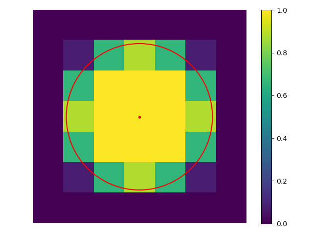
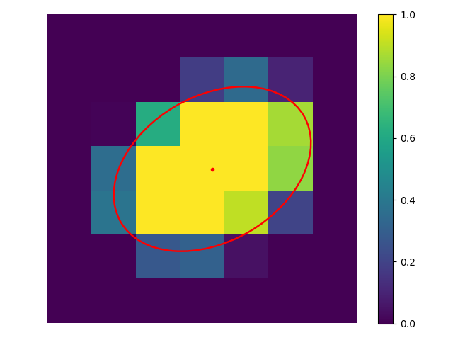

The main information about the project scope and examples could be found
in the
Readme.
For getting information about implemented methods ("API Dictionary")
click the link 'API Reference' on the Navigation Bar above, it will be
opened in the new tab.
Below are a few examples of figures and images related to the
calculation methods implemented in the project.

Precisely projected circle with R = 4.8 pixels on a grid
or the generated 'precise' 'round' object by the class FluorObj().

Precisely projected ellipse with typical_size=(4.8, 3.3, np.pi/6) parameter
or the generated 'precise' 'ellipse' object by the class FluorObj().